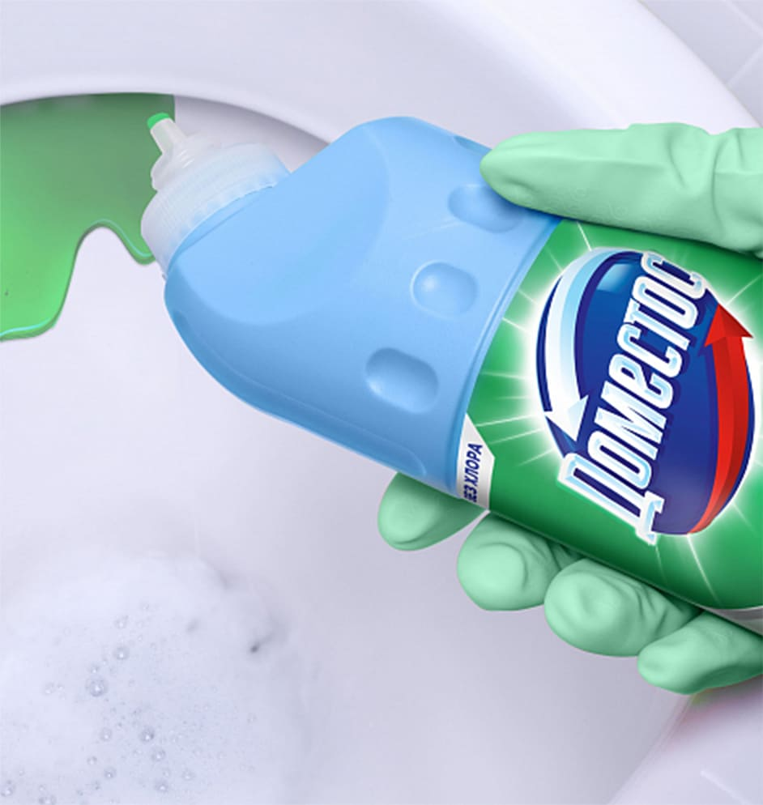

1. ИЗВЕСТКОВЫЙ НАЛЕТ
Известковый налет — одно из самых распространенных загрязнений в туалете. Известковый налет образуется, когда вода, содержащая растворенные минеральные вещества, испаряется, оставляя после себя осадок. С течением времени этот осадок сероватого цвета постепенно накапливается и превращается в устойчивый налет, который сложно удалить без применения специальных средств.
как очистить
Для эффективной очистки унитаза от известкового налета нужно использовать средства с кислотной основой. Кислотный состав геля Антиналет+блеск эффективно борется с известковым налетом, ржавчиной и другими загрязнениями, а также убивает все известные микробы. В состав геля входит лимонная кислота натурального происхождения, а хлор отсутствует. Гель Антиналет+блеск включает в себя два аромата - цветочный и цитрусовый, поэтому гель не только нейтрализует запахи, но и оставляет после себя яркий приятный аромат.
2. МОЧЕВОЙ КАМЕНЬ
Мочевой камень — это твердые отложения, образующиеся на поверхности унитаза в результате высыхания мочи, которая содержит соли, аммоний, фосфаты и другие вещества. Эти отложения имеют желтоватый или коричневый оттенок и образуются чаще всего в мужских туалетах. С течением времени камень становится источником неприятного запаха в санузле, затвердевает и его все сложнее удалить.
как очистить
Удалить мочевой камень можно с помощью средств с сильными кислотами, которые растворяют минеральные соли. Для их удаления подойдет любая кислота: лимонная, ортофосфорная, уксусная, щавелевая, соляная. Эффективным решением проблемы с неприятным запахом при этом виде загрязнения являются блоки для унитаза. Туалетные блоки Арома Люкс Сказочный аромат с пряным ароматом гибискуса и сочных лесных ягод помогают обеспечить блокировку неприятных запахов, защищают от загрязнений и микробов, налета, помогают
3. РЖАВЧИНА
Ржавчина — это следствие воздействия воды, содержащей железо, на металлические части сантехники. В местах, где есть контакты с металлическими поверхностями или где присутствуют микротрещины в эмали, часто появляются оранжевые пятна ржавчины.
как очистить
Удаление ржавчины из унитаза требует использования средств с кислотной основой, которые помогают растворять ржавые отложения и возвращают сантехнику к прежнему виду.
4. ПЛЕСЕНЬ И ГРИБОК
Плесень и грибок — это не только неприятные, но и вредные для здоровья микроорганизмы, которые могут появляться в туалете при высоком уровне влажности. Часто образуются в углах унитаза или в зоне стыков.
как очистить
Для эффективного удаления плесени и грибка следует использовать средства с антисептическими и фунгицидными свойствами, например, хлор. Хлор – отлично убивает споры плесени.
Хлор является основным компонентом геля Доместос Свежесть Атлантики. Это универсальный чистящий гель, который борется с неприятными запахами, бактериями, грибками, вирусами и спорами во всем доме. Можно использовать для уборки и очищения туалета, ванны, раковины, плитки, рабочих
5. КАК ДОМА ПОДДЕРЖИВАТЬ САНУЗЕЛ В ИДЕАЛЬНОМ СОСТОЯНИИ
Чтобы ваш туалет всегда оставался белоснежным и чистым, важно не только регулярно его очищать, но и соблюдать несколько простых правил:

- Не позволяйте загрязнениям накапливаться. Бактерии и микробы провоцируют появление неприятного запаха в санузле, поэтому необходимо регулярно проводить уборку с антибактериальными чистящими средствами.
- Используйте блоки для унитаза, например, Сила 5в1 Свежесть океана от бренда Доместос. Под действием напора воды чистящие компоненты таблеток ополаскивают всю поверхность унитаза, защищая от бактерий, запаха и помогая
- Поддерживайте хорошую вентиляцию в туалете, чтобы предотвратить развитие плесени и грибка.
- Не забывайте о технике безопасности. Надевайте резиновые перчатки, не допускайте разрывов в перчатках. Проветривайте помещение после уборки. Не смешивайте разные средства. Храните средства в недоступном для детей месте. Никогда не переливайте и не храните химические средства в других бутылках без оригинальных этикеток. Читайте инструкции и используйте средства по назначению.
Белоснежная и чистая сантехника — это не только вопрос эстетики, но и здоровья. Регулярное использование эффективных моющих средств поможет поддерживать санузел в идеальном состоянии, создавая приятную атмосферу в идеальном состоянии, создавая приятную атмосферу в доме.
насколько хорошо вы разбираетесь в химии.